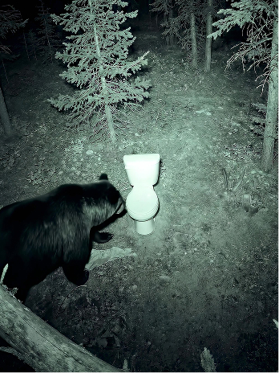
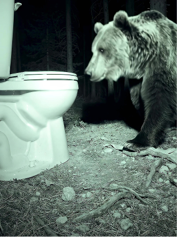
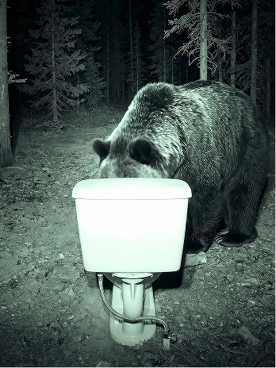
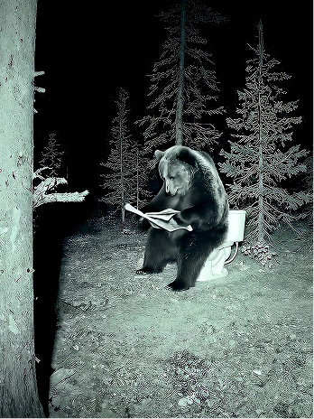

Nature's Calling was a teaser social for Columbia's campaign around a beer brewed from bear poo. Yes, really. The concept was simple and brilliantly absurd: a bear wandering through a forest, finding a toilet, and doing what bears do. The budget however wasn't going to stretch to traditional CG, so the team turned to generative AI to bring it to life.
I built a purpose-built AI pipeline within Runway Workflow, using a carefully tuned series of prompts, nodes and reference images designed to plug directly into a wider post-production pipeline. The environment was considered from the start, with consistent lighting, camera movement and environmental factors all working quietly in the background to mask the imperfections that generative AI can sometimes throw up.
Once all the clips were generated, the talented Darnell Depradine took over in the edit, weaving together multiple camera angles and actions into something genuinely funny and cohesive. Sound was handled by the brilliant team at No.8, with one particularly inspired moment: the unmistakable plop courtesy of a banana dropped into a real toilet.
Across the project I covered producing, AI prompting, pipeline build and traditional post production from start to finish.




Agency: adam&eveDDB
Creative: Ben Robinson & Mike WHiteside
AI Prompting & Workflow: Richard Bailey
Sound Design: James Everett @ No.8
Editor: Darnell Depradine
Producer: Richard Bailey
Agency Producer: Kal Palmer
Account Team: Flora Hopewell